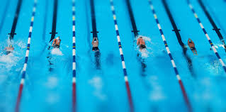
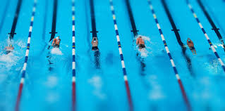

قوانین
اگر در یک مسابقه تنها یک شناگر شرکت داشته باشد، باید تمام مسافت مقرر را شناکند تا واجد شرایط شناخته شود. یک شناگر باید مسابقه خود را در همان خطی که استارت زده است، به پایان برساند. در مسابقات شنای آزاد یا بخش شنای آزاد مسابقات مختلط، ایستادن به روی کف استخر باعث اخراج شناگر نمی شود اما باید توجه داشت که شناگر حق راه رفتن ندارد. عبور از خط (طناب) شنا و ورود به خط شنای دیگر مجاز نمی باشد و شناگر خاطی اخراج می شود. در هنگام مسابقه، هیچ شناگری اجازه ندارد اشیایی به تن کند یا از وسایلی استفاده کند که باعث افزایش سرعت، غوطه وری یا استقامت او می شوند، (مانند فین هاو…) استفاده از عینک شنا مانعی ندارد. در هر تیم امدادی، 4 شناگر شرکت دارند. در مسابقات امدادی، اگر پیش از این که شناگر داخل آب، دیواره استخر را لمس کند، تماس پای شناگر بعدی با سکوی استارت قطع شده باشد، خطا محسوب می شود.